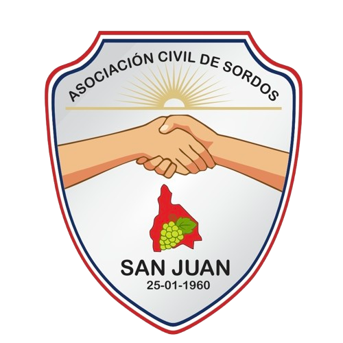

Desde nuestra fundación en 1960, trabajamos sin descanso para garantizar la accesibilidad y el respeto por la identidad de la comunidad sorda en la provincia de San Juan, Argentina.
Conocé nuestra historiaLa Asociación Civil de Sordos San Juan es una institución sin fines de lucro, pionera en la defensa de los derechos de las personas sordas e hipoacúsicas en la región de Cuyo. Nacimos el 25 de enero de 1960 por voluntad de un grupo de familias y educadores comprometidos con la comunicación y la igualdad.
Con más de seis décadas de historia, hemos sido testigos y protagonistas de la evolución de la Lengua de Señas Argentina (LSA) y de las políticas de accesibilidad en la provincia.
Compromiso con la comunidad, transparencia en la gestión, solidaridad activa y una profunda vocación por derribar barreras comunicacionales y culturales.
Promover la plena accesibilidad en todos los ámbitos (educación, salud, justicia y trabajo) garantizando el derecho a la comunicación a través de la Lengua de Señas Argentina y el respeto por la identidad cultural sorda en San Juan.
Ser la entidad de referencia en la región de Cuyo en materia de accesibilidad e inclusión, continuando con el legado de nuestros fundadores de 1960 e inspirando a futuras generaciones.
Acompañamiento integral para la comunidad sorda y sus familias.
Servicio profesional de interpretación para trámites, consultas médicas, reuniones laborales y eventos institucionales en toda la provincia.
Cursos de LSA para oyentes, talleres de lectoescritura para niños sordos y formación en derechos lingüísticos.
Asesoramiento y patrocinio jurídico gratuito para garantizar el acceso a la justicia y la igualdad de oportunidades.
Estamos en el corazón de San Juan. ¡Acercate o escribinos!
📱 Seguinos en redes para conocer nuestras actividades y novedades.